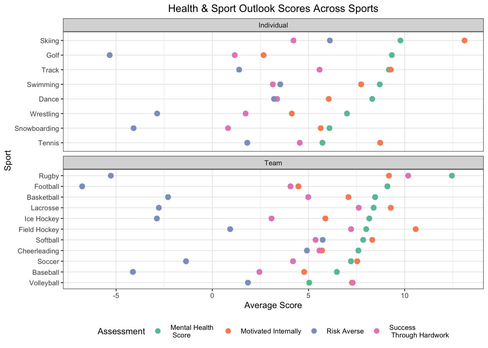
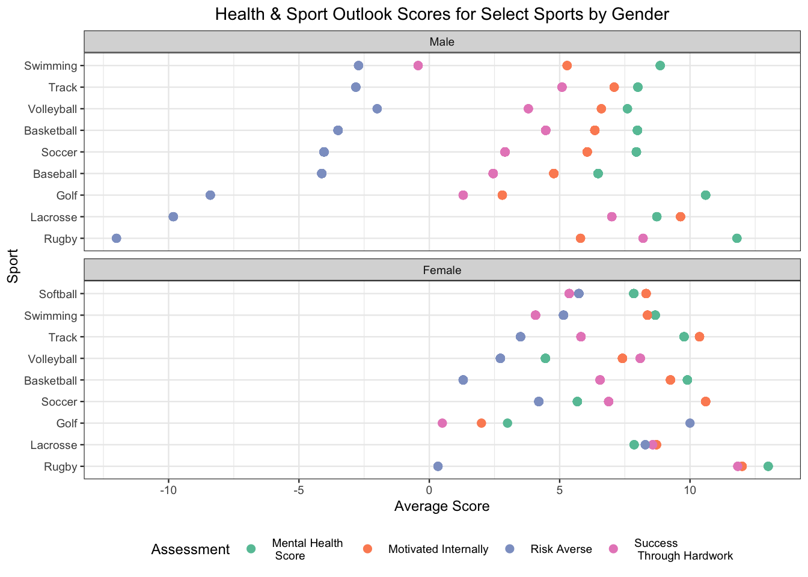
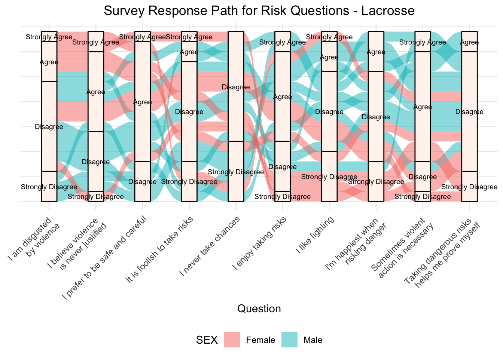
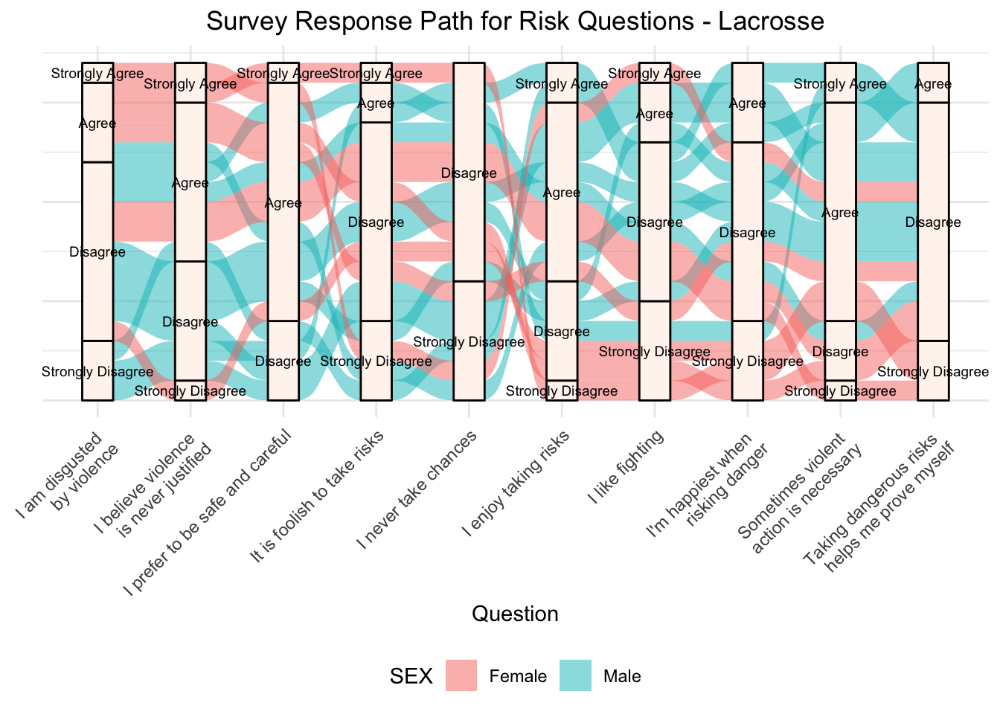
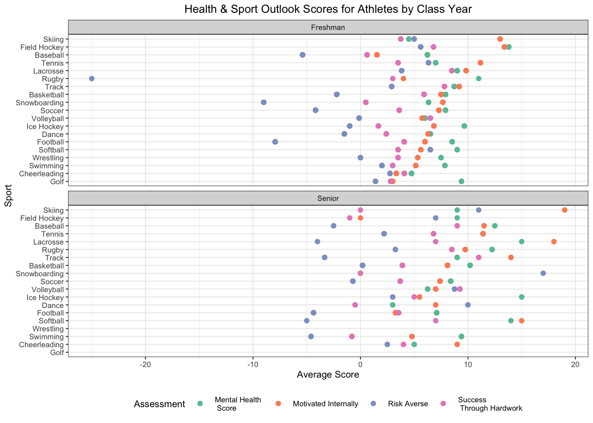

Chapter 6 Results
6.1 Who took this survey?

Students who took part in this survey are within the age range of College Students as is expected. Some older students who participated in the study may include graduate students and some students who started college later than their peers or are taking extra time to finish. The breakdown between men and women is fairly evenly split, which is nice to see. The majority of respondents were white, which may lead to some biases in responses, particularly because mental health is known to have strong correlations with economic status and race. However, when you consider this is a survey given to students at Northeastern University, a private university in Boston, in 2006 it could be feasible that this breakdown represented the student population at that time, especially for athletes and those interested in sports. Lastly, we see from the demographics that we have a majority of underclassmen who took the survey (Freshman, Sophomore) which may also lead to biased results as the stresses of college, adult life, and a persons relationship to sport likely change between Freshman and Senior years of college.
Now that we know a little bit about the demographics of respondents, lets take a look at what sports they participated in:

Students selected a wide variety of sports as their Primary Sport. Each student was only able to elect one sport, however we are not displaying those who did not select any sport as we will only be looking at students with a primary sport. In addition, we will exclude “Other” sports in the following analyses as we try to investigate how sport types correlate with mental health and other outlook indicators.
We see that the most popular sports are Basketball, Soccer, Football and Baseball. This makes sense for an American University!
6.2 Investigating Mental Health Responses
Our primary questions of interest surround how aspects of sport, performance, and team correlate with Mental Health Indicators. As part of the survey given to students, there were 10 questions that were meant to assess each students mental health. Students were asked to respond to the following prompt:
"Below is a list of some of the ways you may have felt or behaved recently. Please indicate how often you have felt this way during the past week."
Let’s take a look at how students responded to these questions:

Add discussion of graph or graphs here. Transition to self made scores to see if MH correlates with any other behaviors
6.3 Investigating Sport Motivation, Perspectives on Success, Behavior Patterns, and Mental Health for Athletes
In effort to assess how factors related to sports and sport performance are related to an athletes mental health, we created a scoring formula for all students based on their responses to the survey questions:
Mental Health Score – Mental Health questions were posed in the following manner:
"Below is a list of some of the ways you may have felt or behaved recently. Please indicate how often you have felt this way during the past week."Based on the feeling, we assigned scores that were positive to indicate positive mental health outlook versus negative scores to indicate a negative outlook on mental health. For example, if a respondent answered “I was happy” with “All of the time” they would get +2 points, versus a response of “Rarely or None of the Time” would get -2 points. In summary, a high mental health score denotes a positive mental health outlook.Internal Motivation Score –
Risk Averse Score –
Success through Hardwork Score –

We were interested in understanding how these indicators correlated with eachother and most importantly with mental health scores. Unfortunately, there seems to be only a loose correlation between Mental Health Scores and the various indicators. The strongest being a positive correlation (0.62) between mental health and motivation.
The strongest correlation observed overall is between Motivation and Outlook on Success. Higher scores in these two categories mean motivation is mostly coming from within (versus external motivation) and that success comes from hardwork and training (versus pure skill or talent), respectively. This makes sense intuitively because if someone has internal motivation to do something, they likely use that motivation to work at whatever the skill or task is.
Now looking deeper at these scores across sports and sport type we can draw a few conclusions.

In looking at this plot, there are many interesting things to note.
We’ll talk about maximum values per Assessment first:
Rugby has the highest average mental health score amongst all athletes and sports polled! After Rugby, Figure Skating, Equestrian, and Skiing are the next highest scorers respectively.
Figure Skating has the highest score for internal motivation. However it is important to remember that Figure Skating had only one response, which is not a compelling amount of data for which we can say anything conclusive about the sport or the athletes within it. The second highest score for internal motivation is Gymnastics, closely followed by Skiing. Interestingly, these are all individual sports. Intuitively, this makes sense as people doing individual sports need to be heavily motivated in order to perform well in their respective sport. This is not to say team sport athletes are not motivated, however they could rely more on their teammates and thereby have more external motivation from the team, versus someone who is competing alone.
Ping-Pong ranks as the most risk averse sport amongst athletes polled in this survey! The runners up were Rowing and Colorguard.
Rowing has the highest success through hardwork score. In fact, all four of the categories are above average for Rowing. Gymnastics was second for success through hardwork, followed by Rugby. Based on the definition of the score, this would mean these three sports responded in the least ego-centric manner and attribute their success more to hardwork than pure talent and being “better” than their competitors.
Some indicators that deserve deeper conversation:
Colorguard is the only sport that has a negative mental health score. Colorguard is a team of performers who perform choreographed dances and routines with various equipment to the music of the marching band show. Although the sports are quite different, there are some parallels to be made between Colorguard and Dance, however their scores are quite different upon comparison! Dance has a below average success through hardwork score, but above average on all other assessments, while colorguard is well below average on mental health and above average on others. One thing that makes colorguard different than all other sports on this list is the fact that the colorguard is performing alongside another performance, that being the marching band, perhaps that has some effect on participants that is not exhibited in other sports.
Badminton and Weightlifting are the only two sports that skewed more towards the ego side of outlook on their success than on hardwork. This is surprising for weightlifting because weightlifting is almost not at all related to athletic ability or “being good” at it, since you need to build muscle overtime in order to become proficient, however perhaps something about the culture of weightlifting propegates this mentality.
The amount of pro-risky behavior sports was surprising to us as well. Based on previous knowledge and research, we anticipated that football, rugby, boxing, wrestling, and ice hockey would be on the riskier side due to the violent aspects of their sport and sport cultures however cross country, golf, and badminton were very unexpected additions to this list.
Individual sports and Team sports don’t show trends between groups indicating there may be no correlation between these factors and the type of sport, team or individual, you are part of. So we wondered if perhaps grouping by gender would be a better indicator for any of these assessments. We hand selected sports that had representation across both genders (in addition we also added Baseball and Softball as comparable sports for male and female respectively).

There is one assessment that clearly differs between men and women: risk tolerance! For all sports that have male and female participants, the males are more risk tolerant than the females are. This outcome is not incredibly surprising, however it is interesting to see that no female sport averages fell into the negative area. The closest were female rugby players. Based on the nature of rugby, this seems reasonable.
For some sports like soccer, females have a lower mental health score than males in their sport, however this is not consistent across all sports. When we compare baseketball we see that female baseketball players have a higher mental health score. So we cannot say that that one or the other gender has better or worse mental health outlooks.
We also see that male swimmers skew towards an ego-centered view on success. The next closest are female and male golfers.
we wondered whether there were any insights to be gained from checking whether year in college was correlated with these indicators.
 

